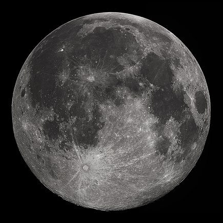

Луна

Луна — единственный естественный спутник Земли. Самый близкий к Солнцу спутник планеты, так как у ближайших к Солнцу планет ( Меркурия и Венеры) их нет. Второй по яркости объект на земном небосводе после Солнца и пятый по величине естественный спутник планеты Солнечной системы. Среднее расстояние между центрами Земли и Луны — 384 467 км (0,00257 а.е., ~30 диаметров Земли). Видимая звёздная величина полной Луны на земном небе —12,71m. Освещённость, создаваемая полной Луной возле поверхности Земли при ясной погоде, составляет 0,25—1 лк. Луна появилась около 4,51 млрд лет назад, немного позже Земли. Наиболее популярна гипотеза о том, что Луна сформировалась из осколков, оставшихся после «Гигантского столкновения» Земли и Тейи — планеты, схожей по размерам с Марсом. Луна является единственным внеземным астрономическим объектом, на котором побывал человек.